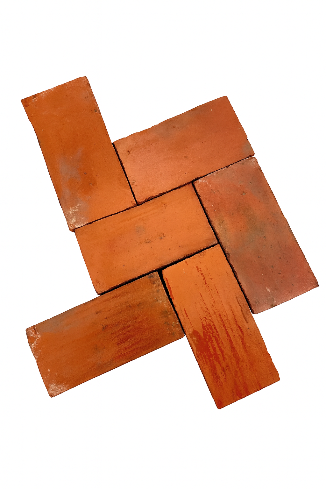

Pavimenti

Pianelle in terracotta
Pianelle in cotto originali, con superficie leggermente consumata dal tempo, ideali per soggiorni, cucine, taverne e ambienti storici.
Pianelle in terracotta recuperate da casali, chiostri e dimore storiche, ideali per pavimenti interni di pregio e restauri conservativi.
Le pianelle vengono selezionate per formato, colore e patina, per ottenere pavimenti omogenei e in armonia con l’architettura esistente.
Pianelle in cotto originali, con superficie leggermente consumata dal tempo, ideali per soggiorni, cucine, taverne e ambienti storici.
Lotti con formati misti, pianelle più grandi o più strette e pezzi speciali, adatti a riquadri, cornici e pose dall’aspetto più mosso.
Inviaci misure, foto degli ambienti e qualche riferimento sul progetto: potremo proporti le pianelle più adatte e un lotto coerente per colore e formato.
Email: info@materialiantichi.it
Telefono: +39 349 300 2099
Magazzino: Contrada S. Pietro Vecchio 2 (FM) – su appuntamento
Possiamo fornire lotti omogenei per colore e formato, con spedizione in tutta Italia. Su richiesta inviamo foto dettagliate dei lotti disponibili prima della conferma dell’ordine.